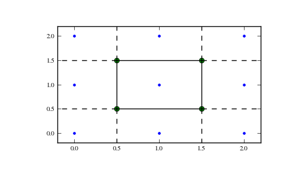

scipy.spatial.Voronoi¶
- class scipy.spatial.Voronoi(points, furthest_site=False, incremental=False, qhull_options=None)¶
Voronoi diagrams in N dimensions.
New in version 0.12.0.
Parameters : points : ndarray of floats, shape (npoints, ndim)
Coordinates of points to construct a convex hull from
furthest_site : bool, optional
Whether to compute a furthest-site Voronoi diagram. Default: False
incremental : bool, optional
Allow adding new points incrementally. This takes up some additional resources.
qhull_options : str, optional
Additional options to pass to Qhull. See Qhull manual for details. (Default: “Qbb Qc Qz Qx” for ndim > 4 and “Qbb Qc Qz” otherwise. Incremental mode omits “Qz”.)
Raises : QhullError :
Raised when Qhull encounters an error condition, such as geometrical degeneracy when options to resolve are not enabled.
Notes
The Voronoi diagram is computed using the Qhull libary [Qhull].
References
[Qhull] (1, 2) http://www.qhull.org/ Examples
Voronoi diagram for a set of point:
>>> points = np.array([[0, 0], [0, 1], [0, 2], [1, 0], [1, 1], [1, 2], ... [2, 0], [2, 1], [2, 2]]) >>> from scipy.spatial import Voronoi, voronoi_plot_2d >>> vor = Voronoi(points)
Plot it:
>>> import matplotlib.pyplot as plt >>> voronoi_plot_2d(vor) >>> plt.show()
The Voronoi vertices:
>>> vor.vertices array([[ 0.5, 0.5], [ 1.5, 0.5], [ 0.5, 1.5], [ 1.5, 1.5]])
There is a single finite Voronoi region, and four finite Voronoi ridges:
>>> vor.regions [[], [-1, 0], [-1, 1], [1, -1, 0], [3, -1, 2], [-1, 3], [-1, 2], [3, 2, 0, 1], [2, -1, 0], [3, -1, 1]] >>> vor.ridge_vertices [[-1, 0], [-1, 0], [-1, 1], [-1, 1], [0, 1], [-1, 3], [-1, 2], [2, 3], [-1, 3], [-1, 2], [0, 2], [1, 3]]
The ridges are perpendicular between lines drawn between the following input points:
>>> vor.ridge_points array([[0, 1], [0, 3], [6, 3], [6, 7], [3, 4], [5, 8], [5, 2], [5, 4], [8, 7], [2, 1], [4, 1], [4, 7]], dtype=int32)
Attributes
points (ndarray of double, shape (npoints, ndim)) Points used for constructing the Voronoi diagram. vertices (ndarray of double, shape (nvertices, ndim)) Coordinates of the Voronoi vertices. ridge_points (ndarray of ints, shape (nridges, 2)) Indices of the points between which each Voronoi ridge lies. ridge_vertices (list of list of ints, shape (nridges, *)) Indices of the Voronoi vertices forming each Voronoi ridge. regions (list of list of ints, shape (nregions, *)) Indices of the Voronoi vertices forming each Voronoi region. -1 indicates vertex outside the Voronoi diagram. point_region (list of ints, shape (npoints)) Index of the Voronoi region for each input point. If qhull option “Qc” was not specified, the list will contain -1 for points that are not associated with a Voronoi region. Methods
add_points(points[, restart]) Process a set of additional new points. close() Finish incremental processing.